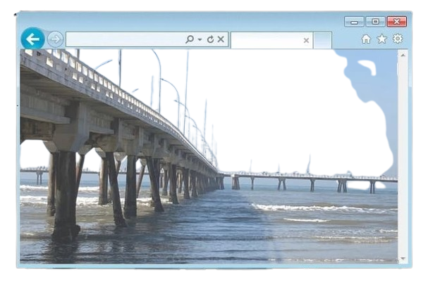
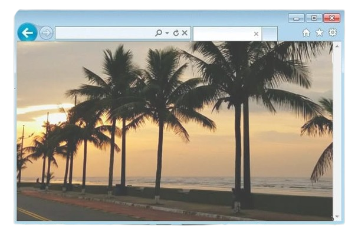

População: ~60 mil habitantes Localização: litoral de São Paulo (Baixada Santista) Bioma: Mata Atlântica Fundação: município criado em 1959 Aniversário: 7 de dezembro Característica: estância balneária

A região de Mongaguá era habitada por povos indígenas muito antes da
chegada dos colonizadores europeus, que utilizavam os recursos
naturais da região para sua sobrevivência, como a pesca e a coleta.
A
ocupação pelos não indígenas teve início durante o período colonial,
de forma ainda lenta e pouco estruturada, com atividades voltadas
principalmente ao litoral, como a pesca artesanal e pequenas produções
de subsistência.
Por muito tempo, a área manteve características de
vila simples, com baixa densidade populacional .
Foi a partir do século
XX que Mongaguá passou a apresentar um desenvolvimento mais
significativo, impulsionado pelo crescimento do turismo no litoral
paulista.
A melhoria no acesso, especialmente por meio de rodovias que
ligam a região à capital São Paulo, contribuiu para a chegada de
visitantes e para a expansão urbana.
Em 1959, Mongaguá conquistou sua
emancipação político-administrativa, tornando-se oficialmente um
município independente.
Desde então, consolidou-se como um destino
turístico conhecido por suas praias e por seu ambiente tranquilo,
sendo bastante procurado por veranistas e moradores da região.

Economia baseada no turismo e comércio local Forte presença de casas
de veraneio Movimento turístico intenso no verão Destaque para
praias e atrações naturais
População urbana em crescimento Economia influenciada pela
sazonalidade do turismo Desafios sociais ligados ao crescimento
urbano Aumento da população na alta temporada
Presença de praias, rios e cachoeiras Áreas de Mata Atlântica
preservada Manguezais e regiões costeiras Relevo com planície
litorânea e áreas de serra
Plataforma de pesca (uma das maiores da América Latina) Parque
Ecológico A Tribuna Poço das Antas Praias urbanas e áreas naturais